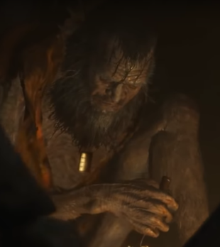

|  | Скульптор - это пожилой монах, живущий в заброшенном храме, который вырезает бесчисленные статуи Будды. Он описывается как тихий и недружелюбный отшельник и, похоже, много знает о протагонисте, потенциально помогая вернуть его из мертвых. Именно он сделал протагонисту его протез. У скульптора, так же как и у протагониста, отсутствует левая рука. |
|---|---|
| Скульптор | 2014/05/13 16:30:59 |